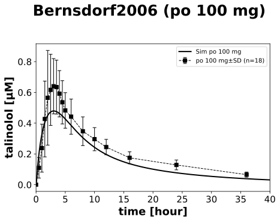
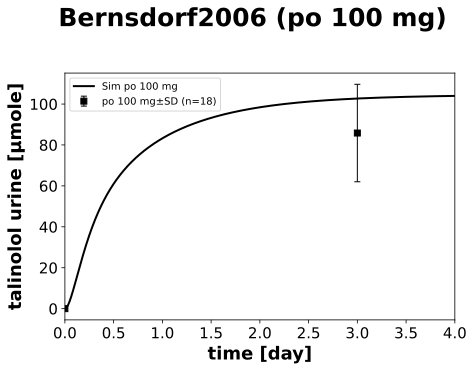
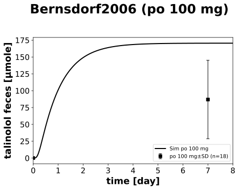
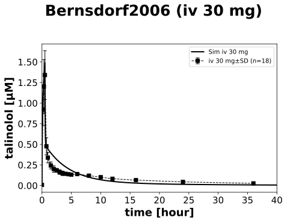
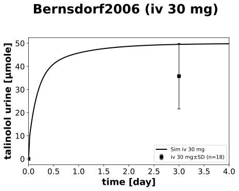
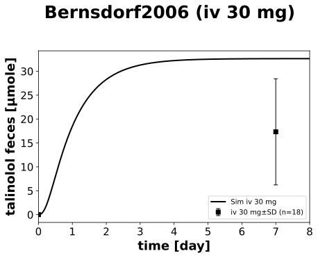
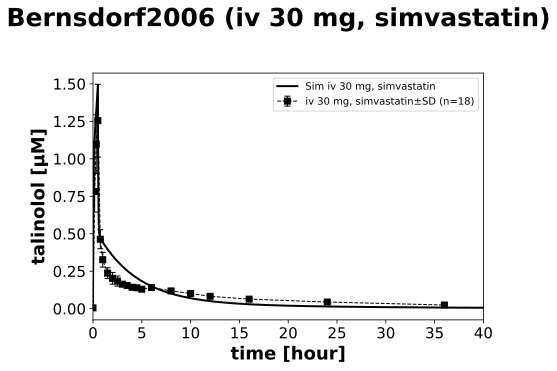
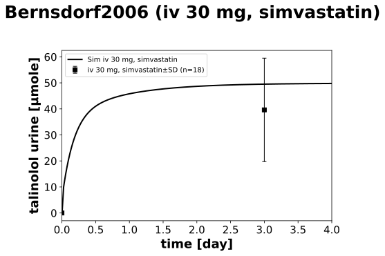
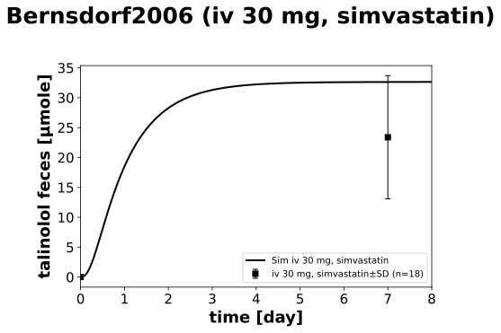
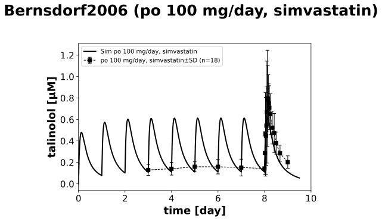

Overview
Models
| model | source |
|---|---|
| model | talinolol_body_flat.xml |
Datasets
| dataset | file |
|---|---|
| tal_po_100_multi_sim_serum | datasets/Bernsdorf2006_tal_po_100_multi_sim_serum.tsv |
| tal_iv_30_serum | datasets/Bernsdorf2006_tal_iv_30_serum.tsv |
| tal_iv_30_sim_serum | datasets/Bernsdorf2006_tal_iv_30_sim_serum.tsv |
| tal_po_100_serum | datasets/Bernsdorf2006_tal_po_100_serum.tsv |
| tal_po_100_multi_sim_feces | datasets/Bernsdorf2006_tal_po_100_multi_sim_feces.tsv |
| tal_po_100_multi_sim_urine | datasets/Bernsdorf2006_tal_po_100_multi_sim_urine.tsv |
| tal_iv_30_sim_feces | datasets/Bernsdorf2006_tal_iv_30_sim_feces.tsv |
| tal_iv_30_sim_urine | datasets/Bernsdorf2006_tal_iv_30_sim_urine.tsv |
| tal_iv_30_feces | datasets/Bernsdorf2006_tal_iv_30_feces.tsv |
| tal_iv_30_urine | datasets/Bernsdorf2006_tal_iv_30_urine.tsv |
| tal_po_100_feces | datasets/Bernsdorf2006_tal_po_100_feces.tsv |
| tal_po_100_urine | datasets/Bernsdorf2006_tal_po_100_urine.tsv |
Figures (10)




















Code
"""Simulation experiment of the study Bernsdorf2006."""
from typing import ClassVar, NamedTuple, override
import numpy as np
from pkpdsim.metadata import (
ApplicationForm,
Coadministration,
DataType,
Dosing,
Fasting,
Health,
PKPDData,
PKPDMappingMetaData,
Route,
Tissue,
)
from sbmlsim import Q
from sbmlsim.data import DataSet
from sbmlsim.fit import FitData, FitMapping
from sbmlsim.plot import Axis, Figure
from sbmlsim.simulation import Change, Simulation
from sbmlsim.units import Quantity
from pkdb_models.models.talinolol import MODEL
from pkdb_models.models.talinolol.experiments.base_experiment import (
TalinololSimulationExperiment,
)
class Arm(NamedTuple):
"""An arm of the study: its data and how it is described."""
intervention: str # intervention of the data
route: Route
application_form: ApplicationForm
dosing: Dosing
coadministration: Coadministration
tissues: tuple[str, ...] # the mapped data
label: str
class Bernsdorf2006(TalinololSimulationExperiment):
"""Simulation experiment of Bernsdorf2006.
18 healthy subjects (crossover): 30 mg talinolol infused over 30 min and
100 mg talinolol orally (tablet), serum to 36 h, urine for 3 days and feces
for 7 days. Simvastatin 40 mg/day from study day 15 to 36 with talinolol 100
mg/day from day 21 to 29: the steady state profile on day 29 and the
infusion again with simvastatin. Simvastatin does not change the
pharmacokinetics of talinolol (90% CIs of AUC, CL and CLR within 0.80-1.25;
the fecal excretion after the infusion 1.35, 1.12-1.62), the arms with
simvastatin are simulated with its P-gp factor (no effect).
All data are geometric means with geometric SDs: the serum SDs are the
distances to the (asymmetric) bar ends of Fig2; the SDs of the urine and the
feces are the SDs of a log-normal distribution with the geometric mean and
the geometric SD of the ranges of Tab1 (mean/gSD, mean*gSD). The ABCB1
genotypes are mixed (enriched for 3435TT), without an effect on talinolol.
"""
#: the observables of the data
yids: ClassVar[dict[str, str]] = {
"serum": "[Cve_tal]",
"urine": "Aurine_tal",
"feces": "Afeces_tal",
}
#: the multiple doses with simvastatin: 100 mg/day on study day 21 to 29,
#: the profile of the data is relative to the last dose (day 29, simulated
#: day 8)
n_doses_multi: ClassVar[int] = 9
arms: ClassVar[dict[str, Arm]] = {
"po_100": Arm(
"TAL_PO",
Route.PO,
ApplicationForm.TABLET,
Dosing.SINGLE,
Coadministration.NONE,
("serum", "urine", "feces"),
"po 100 mg",
),
"iv_30": Arm(
"TAL_IV",
Route.IV,
ApplicationForm.SOLUTION,
Dosing.SINGLE,
Coadministration.NONE,
("serum", "urine", "feces"),
"iv 30 mg",
),
"iv_30_sim": Arm(
"TAL_IV, SIM",
Route.IV,
ApplicationForm.SOLUTION,
Dosing.SINGLE,
Coadministration.SIMVASTATIN,
("serum", "urine", "feces"),
"iv 30 mg, simvastatin",
),
# the urine and the feces at steady state are not mapped: the
# intervals of their collection are not reported
"po_100_multi_sim": Arm(
"TAL_CR, SIM",
Route.PO,
ApplicationForm.TABLET,
Dosing.MULTIPLE,
Coadministration.SIMVASTATIN,
("serum",),
"po 100 mg/day, simvastatin",
),
}
@override
def datasets(self) -> dict[str, DataSet]:
keys = {arm.intervention: key for key, arm in self.arms.items()}
dsets = {}
# serum (Fig2)
df = self.load_dataframe("Fig2")
for intervention, df_intervention in df.groupby("intervention"):
df_intervention = df_intervention.copy()
key = keys[str(intervention)]
if key == "po_100_multi_sim":
# time relative to the last dose (simulated day 8)
df_intervention["time"] += (self.n_doses_multi - 1) * 24
dset = DataSet.from_df(df_intervention, self.ureg)
dset.unit_conversion("mean", 1 / self.Mr.tal)
dsets[f"tal_{key}_serum"] = dset
# urine (0-3 days) and feces (0-7 days) (Tab1)
df = self.load_dataframe("Tab1a")
# SD of the log-normal distribution of the geometric mean and the
# geometric SD
df["sd"] = df["mean"] * np.sqrt(np.exp(np.log(df["gsd"]) ** 2) - 1)
for _, df_group in df.groupby("label"):
intervention, tissue = df_group.iloc[0][["intervention", "tissue"]]
dset = DataSet.from_df(df_group, self.ureg)
dset.unit_conversion("mean", 1 / self.Mr.tal)
dsets[f"tal_{keys[intervention]}_{tissue}"] = dset
return dsets
def _iv_infusion(self, changes: dict[str, Quantity]) -> Simulation:
"""Infusion of 30 mg over 30 min, 8 days for the feces (2 min steps).
Args:
changes: the changes of the arm.
"""
return Simulation(
time_unit="min",
end=30 + 8 * 24 * 60,
preinit_changes={
**self.default_changes(),
**changes,
"Ri_tal": Q(30, "mg") / Q(30, "min"),
},
changes=[Change(30, {"Ri_tal": Q(0, "mg/min")})],
)
@override
def simulations(self) -> dict[str, Simulation]:
simvastatin = {
"GU__f_pgp": Q(self.pgp_interaction["simvastatin"], "dimensionless")
}
return {
"tal_po_100": Simulation(
time_unit="min",
end=8 * 24 * 60, # at least 7 days for feces
preinit_changes={
**self.default_changes(),
"PODOSE_tal": Q(100, "mg"),
},
),
"tal_iv_30": self._iv_infusion({}),
"tal_iv_30_sim": self._iv_infusion(simvastatin),
# 100 mg/day for 9 days with simvastatin, to 36 hr after the last
# dose
"tal_po_100_multi_sim": Simulation(
time_unit="min",
end=(self.n_doses_multi - 1) * 24 * 60 + 36 * 60,
preinit_changes={
**self.default_changes(),
**simvastatin,
"PODOSE_tal": Q(100, "mg"),
},
changes=[
self.add_doses(
[day * 24 * 60 for day in range(1, self.n_doses_multi)],
{"PODOSE_tal": Q(100, "mg")},
)
],
),
}
@override
def fit_mappings(self) -> dict[str, FitMapping]:
mappings = {}
for key, arm in self.arms.items():
for tissue in arm.tissues:
mappings[f"fm_tal_{key}_{tissue}"] = FitMapping(
self,
reference=FitData(
self,
dataset=f"tal_{key}_{tissue}",
xid="time",
yid="mean",
yid_sd="mean_sd",
count="count",
),
observable=FitData(
self, task=f"task_tal_{key}", xid="time", yid=self.yids[tissue]
),
metadata=PKPDMappingMetaData(
tissue=Tissue(tissue),
route=arm.route,
application_form=arm.application_form,
dosing=arm.dosing,
health=Health.HEALTHY,
# standard meals at 5, 8 and 11 h after the dose,
# overnight fasting is not reported
fasting=Fasting.NR,
coadministration=arm.coadministration,
data=PKPDData.PK,
data_type=DataType.MEAN,
),
)
return mappings
@override
def figures(self) -> dict[str, Figure]:
ylabels = {
"serum": self.label_tal,
"urine": self.label_tal_urine,
"feces": self.label_tal_feces,
}
# end of the time axis [hr] for serum, [day] for urine and feces
max_values = {"serum": 40, "urine": 4, "feces": 8}
figures = {}
for key, arm in self.arms.items():
for tissue in arm.tissues:
# serum of Fig2, urine and feces of Tab1
fig_id = "Fig2" if tissue == "serum" else "Tab1"
sid = self.to_sid(f"{fig_id} {key} {tissue}")
fig = Figure(
experiment=self,
sid=sid,
num_rows=1,
num_cols=1,
name=f"{self.__class__.__name__} ({arm.label})",
)
if arm.dosing == Dosing.MULTIPLE:
xaxis = Axis(self.label_time, unit="day", min=0, max=10)
elif tissue == "serum":
xaxis = Axis(
self.label_time, unit="hour", min=0, max=max_values[tissue]
)
else:
xaxis = Axis(
self.label_time, unit="day", min=0, max=max_values[tissue]
)
plots = fig.create_plots(xaxis=xaxis, legend=True)
plots[0].set_yaxis(
ylabels[tissue],
unit="µM" if tissue == "serum" else "µmole",
scale="linear",
)
plots[0].add_data(
task=f"task_tal_{key}",
xid="time",
yid=self.yids[tissue],
label=f"Sim {arm.label}",
color="black",
)
plots[0].add_data(
dataset=f"tal_{key}_{tissue}",
xid="time",
yid="mean",
yid_sd="mean_sd",
count="count",
label=arm.label,
color="black",
linestyle="--" if tissue == "serum" else "",
)
figures[sid] = fig
return figures
if __name__ == "__main__":
MODEL.run_experiments(Bernsdorf2006, output_dir=Bernsdorf2006.__name__)